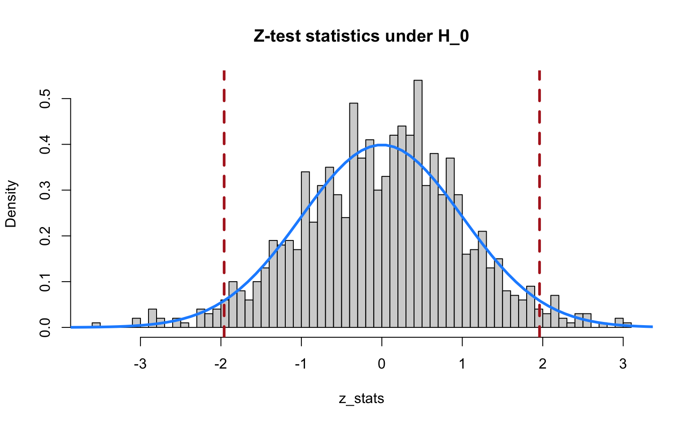
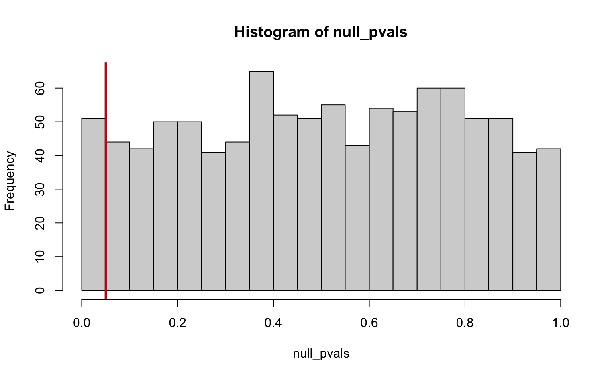
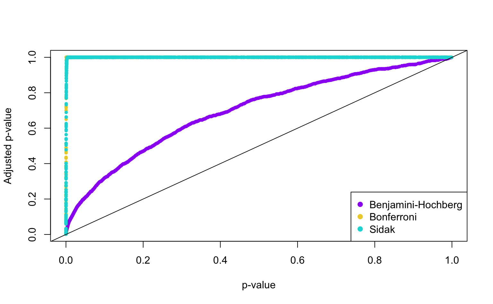

Lab 6: Large Scale Inference
High Dimensional Data Analysis practicals
Adapted by Milan Malfait
21 Feb 2022
(Last updated: 2022-02-21)
1 Introduction
In this lab session we will look at the following topics
- FWER
- FDR
- Multiple testing problem in a real dataset
1.1 Testing many hypotheses
To demonstrate the ideas we will be working with, we will simulate artificial data. Note that since we are doing simulations, we can control everything and also know exactly what the underlying “true” distribution is (sometimes also called the “ground truth”). However, keep in mind that this is an unlikely representation of real-world data.
In particular, we will simulate data for multiple hypothesis tests where the null hypothesis is always true. I.e. for the \(i\)th test, we assume that \(\mu_{1i}\) and \(\mu_{2i}\) represent the means of the two populations of interest, the null hypothesis for comparing the two means is \(H_{0i} : \mu_{1i} = \mu_{2i}\). Let the alternative hypothesis of this test be \(H_{1i} : \mu_{1i} \neq \mu_{2i}\), i.e. we perform a two-tailed test. Suppose we have data collected from both populations, given by \(X_{1i}\) and \(X_{2i}\) of size \(n_{1i}\) and \(n_{2i}\), respectively, and assume that both populations have the same known variance \(\sigma_i^2\). Then we can test this hypothesis by using Z-scores, given by
\[ Z_i=\frac{\bar X_{1i}-\bar X_{2i}}{\sigma_i\sqrt{1/n_{1i}+1/n_{2i}}} \]
Under the null hypothesis, the scores will be distributed as a standard normal \(Z_i\sim N(0,1)\). The null hypothesis is rejected in favor of the alternative if \(z_i < \phi_{\alpha_i/2}\) or \(z_i > \phi_{1-\alpha_i/2}\), or equivalently if \(|z_i| > \phi_{1-\alpha_i/2}\), where \(\phi_{\alpha_i/2}\) is the \(\alpha_i/2\)th quantile of the standard normal distribution.
In a multiple hypothesis testing setting, we will perform \(m\) tests using the same test statistic. If the null were true for all hypotheses, we would end up with a sample \(z_1,\ldots,z_m\) from a standard normal distribution.
In this setting, we can only make one type of error: wrongly rejecting the null hypothesis, i.e. a type 1 error. The probability of making this error is given by
\[ \alpha_i=\text{P}\{\text{ reject } H_{0i} | H_{0i}\} \]
(the \(| H_{0i}\) part should be read as “given that the null hypothesis is true”).
If we now perform \(m_0\) such tests (using the 0 subscript to denote that they are all hypotheses for which the null is true), we can summarise the possible outcomes as in the table below:
| Accept.H_0 | Reject.H_0 | Total | |
|---|---|---|---|
| Null True | U (True Negative) | V (False Positive) | m_0 |
Here, \(U\) and \(V\) represent the total number of true negative and false positive results we get, respectively, out of \(m_0\) total tests.
As an example, let’s simulate the scenario above. In the code below, the replicate
function is used to repeat the same procedure a number of times.
Essentially, the following steps are performed :
- Sample \(N = 12\) observations for 2 hypothetical groups from normal distributions with the same mean and known variance
- Calculate Z-scores based on the 2 group means
- Repeat steps 1 to 2
m0times
This mimics performing m0 hypothesis tests on data for which we know the null
hypothesis is true.
For simplicity we assume the variance to be known and equal to 1 for both groups. We simulate 10 observations for each group and calculate the denominator for the Z-scores since it’s the same for each test.
## Set parameters for the simulation
N <- 10 # samples per group
m0 <- 1000 # number of hypothesis tests
mu_1 <- 3 # true mean group 1
mu_2 <- 3 # true mean group 2
sigma <- 1 # known variance
denom <- sigma * sqrt(2 / N) # denominator for Z-scores
set.seed(123) # seed for reproducibility
null_z_scores <- replicate(m0, {
group1 <- rnorm(N, mean = mu_1, sd = sqrt(sigma))
group2 <- rnorm(N, mean = mu_2, sd = sqrt(sigma))
## Calculate Z-score
(mean(group2) - mean(group1)) / denom
})
## Visualize Z-scores
hist(null_z_scores, breaks = 50, freq = FALSE)
## Overlay theoretical standard normal
lines(x <- seq(-5, 5, length.out = 100), dnorm(x), col = "dodgerblue", lwd = 3)
## Draw vertical lines at 2.5 and 97.5th percentiles
abline(v = qnorm(c(0.025, 0.975)), col = "firebrick", lty = 2, lwd = 3)
We see that the Z-scores are nicely distributed as a standard normal. The vertical dashed lines indicate the 2.5th and 97.5th percentiles of the standard normal. The regions outside these lines indicate the Z-scores that we would call significant if we used a cut-off of \(\alpha = 0.05\) for a two-tailed test. So, even though we simulated data under the null hypothesis, our Z-test still returns “significant” results for a number of cases just by chance!
Let’s calculate the p-values for our hypothesis tests and see what the damage is.
To calculate the p-values, we use the pnorm() function in this case, which returns
the value of the standard normal CDF (i.e. pnorm(x) = \(P(Z < x)\)). Since we consider
a two-tailed test, we take the absolute values of the Z-scores and set the lower.tail
argument in pnorm to FALSE (by default it’s TRUE), so that we get
pnorm(abs(x), lower.tail = FALSE) = \(P(Z > |x|)\) and multiply this value by 2.
null_pvals <- 2 * pnorm(abs(null_z_scores), lower.tail = FALSE)
alpha <- 0.05 # significance cutoff
hist(null_pvals, breaks = seq(0, 1, by = 0.05))
abline(v = alpha, col = "firebrick", lwd = 3)
called <- (null_pvals < alpha)
## V = number of false positives, in this case: all significant tests
(V <- sum(called))
#> [1] 48
mean(called) # V / m0
#> [1] 0.048So we get 48 significant tests (false positives) out of a total of 1000, which is, unsurprisingly, approximately equal to our significance cutoff \(\alpha\). Note also that the p-values are uniformly distibuted under the null hypothesis.
If we had carried out only a few tests (say 10) it would be very unlikely to observe a false positive (on average: 0.05 * 10 = 0.5 false positives) at \(\alpha = 0.05\), but since now we’re carrying out so many, we’re almost guaranteed to get false positives. This is what is known as the multiple hypothesis testing problem.
Note that in real-world data the quantities \(U\) and \(V\) are unknown (because we don’t know the truth! If we did, we wouldn’t have to carry out any hypothesis tests in the first place). However, by using simulated data, we do know the truth and so we can explore these quantities.
1.2 The family-wise error rate
If we carry out many tests, we’re almost guaranteed to get type I errors, just by chance. Therefore the type I error rate is no longer a relevant metric. Instead, we consider the Familywise Error Rate (FWER), given by
\[ \text{FWER}=\text{P}\{V > 0\} = \text{P}\{\text{rejecting at least one } H_{0i}| H_0\} \]
where \(H_0\) is the intersection of all partial nulls (\(H_{0i}\)) \(i=1,\ldots,m_0\). In general, we would prefer testing procedures that keep the FWER under control, i.e. correct for the multiplicity problem. So instead of choosing \(\alpha\) to control the probability of getting a false positive in each test, we try to control the FWER, i.e. the probability of getting at least one false positive in our set of hypothesis tests.
In the following exercises, we will explore this idea on some synthetic data.
Exercises: FWER null data simulation
We will simulate performing hypothesis tests for which the null distribution is
always true for different values of m0.
To make the code more simple, we will directly sample the Z-score statistics from
a standard normal (instead of sampling the individual groups and then performing
the test on them, as shown above). We can also skip the p-value calculation and
compare our Z-scores directly to the \((1 - \alpha) / 2\)th quantile of the standard
normal distribution (using the qnorm() function).
Tasks
1. Set m0 = 5 and generate m0 Z-score statistics by sampling from the standard normal distribution. Check which ones are significant using a cutoff alpha = 0.05
To check significance you can use abs(z_score) > qnorm(1 - alpha / 2)
2. Calculate \(V\), the number of significant tests.
Note that to count a logical vector, you can just use sum on it, since TRUE
is numerically interpreted as 1 and FALSE as 0.
3. Check that V > 0 (at least one significant) and store the result in a variable (e.g. at_least_one_signif <- V > 0).
4. Repeat steps 1-3 1000 times and keep track of the result in step 3 by storing it in a vector.
You can either use a for loop or replicate. If using a for loop, make sure to
create an empty vector of the desired length first! Growing a vector is technically
possible but is very inefficient. You can initialize an empty (logical) vector of
a certain length with vec <- logical(length = x)
5. Now compute the FWER as the proportion of times \(V\) was greater than 0.
6. Repeat the same procedure for m0 = 50 and m0 = 1000. Interpret the results.
Solutions
Solution
I combined the exercises above into one code block, to avoid repeated code.
Essentially, I wrapped the simulation in a for loop that goes over the different
values of m0.
## Repeat 1000 times for m0 = 5, 50 and 1000, directly simulate test statistic
## record minimal p-value and check if smaller than alpha
set.seed(1)
B <- 1000 # number of simulations
m0_vec <- c(5, 50, 1000)
alpha <- 0.05
## Initialize empty vector to store FWER results
fwer <- numeric(length = length(m0_vec))
names(fwer) <- paste("m0 =", m0_vec)
## Loop over m0 values and simulate test statistics
for (i in seq_along(m0_vec)) {
## Simulate B times, each time recording V > 0
at_least_one_signif <- replicate(B, {
null_stats <- rnorm(m0_vec[i], mean = 0, sd = 1) # z-score distribution
tests <- abs(null_stats) > qnorm(1 - alpha / 2)
sum(tests) > 0
})
fwer[i] <- mean(at_least_one_signif) # proportion of V >= 1
}
fwer
#> m0 = 5 m0 = 50 m0 = 1000
#> 0.269 0.931 1.0002 Controlling the FWER
We saw in the previous exercises that when conducting a large number of hypothesis tests the FWER becomes unacceptably large. So what can we do to lower it? The most straightforward way would be to just lower \(\alpha\) (so we get less false positives).
Note that we can write the FWER under the null hypothesis (so the p-values are uniformly distributed) as
\[ \begin{align} \text{FWER} = P(\text{at least one rejection}) &= 1 - P(\text{no rejections}) \\ &= 1 - \prod_{i=1}^{m} P(p_i > \alpha) \\ &= 1 - \prod_{i=1}^{m} (1 - \alpha) \\ &= 1 - (1 - \alpha)^{m} \end{align} \]
where \(p_i\) is the p-value for the \(i\)th test.
If we wanted to control the FWER at a certain level (e.g. 0.05), we can simply solve the equation above for \(\alpha\) and get, for a given FWER:
\[ \alpha = 1 - (1 - \text{FWER})^{1/m} \]
Exercise
Using your simulation code from before, confirm that when setting; alpha = 0.0102
and m0 = 5, alpha = 0.00102 and m0 = 50, and finally alpha = 0.000051292
and m0 = 1000 all result in an FWER of approximately 0.05.
Solution
## Repeat 1000 times for m0 = 5, 50 and 1000, directly simulate test statistic
## record minimal p-value and check if smaller than alpha
set.seed(1)
B <- 1000 # number of simulations
m0_vec <- c(5, 50, 1000)
alpha_vec <- c(0.0102, 0.00102, 0.000051292)
## Initialize empty vector to store FWER results
fwer <- numeric(length = length(m0_vec))
names(fwer) <- paste("m0 =", m0_vec)
## Loop over m0 values and simulate test statistics
for (i in seq_along(m0_vec)) {
## Simulate B times, each time recording V > 0
at_least_one_signif <- replicate(B, {
null_stats <- rnorm(m0_vec[i], mean = 0, sd = 1) # z-score distribution
tests <- abs(null_stats) > qnorm(1 - alpha_vec[i] / 2)
sum(tests) > 0
})
fwer[i] <- mean(at_least_one_signif) # proportion of V >= 1
}
fwer
#> m0 = 5 m0 = 50 m0 = 1000
#> 0.057 0.045 0.057The procedure described above is also known as Sidak’s procedure. Another widely used technique to control the FWER is the Bonferroni correction. Note, however that in general, controlling the FWER at levels such as 0.05 is very conservative, i.e. if there were ture alternative cases we might miss them.
3 The False Discovery Rate (FDR)
Now let’s consider a situation where we have both true null and true alternative cases. In this situation we are prone to two types of errors: false positives (type 1, as in the previous case) and false negatives (type 2, i.e. accepting \(H_0\) while it’s actually false).
We can then extend the table from before:
| Accept.H_0 | Reject.H_0 | Total | |
|---|---|---|---|
| Null True | U (True Negative) | V (False Positive) | m_0 |
| Alternative True | T (False Negative) | S (True Positive | m_1 |
| Total | W | R | m |
In addition to the FWER, another important concept for multiple hypothesis testing is the False Discovery Rate (FDR):
\[ \text{FDR} = E[V/R] \]
i.e. the expected proportion of false positives among all positive tests. The ratio \(V/R\) is also called the False Discovery Proportion (FDP).
However, the only quantities from the table above that are observable in real data, are \(W\), \(R\) and \(m\). So to illustrate the concept, we will again make use of simulated data.
In the code below, 1.000 tests are simulated, for which 90% come from cases where the null is true and the other 10% for which the alternative is true. We assume the effect size (difference between the 2 groups) to be equal to 3 under the alternative, so that we can sample the test statistics from a normal distribution with mean 3.
m <- 1000 # total number of hypotheses
p0 <- 0.9 # 90% of cases are true null
m0 <- round(p0 * m) # round to avoid floating point problems
m1 <- round((1 - p0) * m)
set.seed(1)
alpha <- 0.05
null_stats <- rnorm(m0)
alt_stats <- rnorm(m1, mean = 3)
null_tests <- abs(null_stats) > qnorm(1 - alpha / 2)
alt_tests <- abs(alt_stats) > qnorm(1 - alpha / 2)
(U <- sum(!null_tests)) # true negatives
#> [1] 842
(V <- sum(null_tests)) # false positives
#> [1] 58
(S <- sum(alt_tests)) # true positives
#> [1] 87
(T <- sum(!alt_tests)) # false negatives
#> [1] 13
R <- V + S # total number of positives
(FDP <- V / R)
#> [1] 0.4We see that 40% of the positive cases are actually false positives. To get an idea of the FDR, the expected FDP, we will repeat this procedure a number of times in the following exercises.
4 Exercises: FDR simulations
Tasks
1. Set m0 = 90 and m1 = 10 and generate m = 100 test statistics, m0 of them from the standard normal distribution (N(0, 1)) (null distribution) and m1 of them from N(3, 1) (the alternative distribution).
2. Test for significance at alpha = 0.05 by comparing the test statistics to the standard normal, for both sets of tests.
3. Calculate \(V\), \(S\), \(R\) and the FDP.
4. Repeat steps 1-3 1000 times and keep track of the FDP for each iteration. Then compute the FDR as the mean of the FDPs. Interpret the results.
Solutions
Solution
set.seed(1)
B <- 1000 # number of simulations
m0 <- 90
m1 <- 10
alpha <- 0.05
## Simulate B times, each time recording V > 0
FDP <- replicate(B, {
null_stats <- rnorm(m0, mean = 0)
alt_stats <- rnorm(m1, mean = 3)
null_tests <- abs(null_stats) > qnorm(1 - alpha / 2)
alt_tests <- abs(alt_stats) > qnorm(1 - alpha / 2)
V <- sum(null_tests) # false positives
S <- sum(alt_tests) # true positives
R <- V + S
## Return V / R
V / R
})
(FDR <- mean(FDP))
#> [1] 0.3426611The FDR tells us the expected proportion of positive tests that will be false positives.
As with the FWER, we can now think of methods to control the FDR. A very popular method that is widely used in large-scale inference for high-throughput sequencing data is the Benjamini-Hochberg correction. The details of this technique lie outside the scope of this exercise session, but essentially it adjusts the p-values such that the FDR is controlled at a certain level. Note that this is a somewhat different approach then the FWER-controlling techniques, where significance cut-off \(\alpha\) was adjusted instead of the p-values themselves.
The Benjamini-Hochberg (and other techniques) are readily available in base R in
the p.adjust() function (see ?p.adjust for details). You just supply it a
vector of p-values and the desired method (for Benjamini-Hochberg, use
method = "BH").
5 Exercises: real data (Alon et al. (1999))
We will take another look at the dataset by Alon et al. (1999) on gene expression levels in 40 tumour and 22 normal colon tissue samples. We used this data also in Lab 4. However, this time we’re interested in finding genes that expressed significantly different between the tumor and normal samples. In other words, we will perform hypothesis tests for each of the 2000 genes. This is clearly a multiple testing problem.
Tasks
1. Load the data
Just run the code given below.
data("Alon1999")
str(Alon1999[, 1:10]) # first 10 columns
#> 'data.frame': 62 obs. of 10 variables:
#> $ Y : chr "t" "n" "t" "n" ...
#> $ X1: num 8589 9164 3826 6246 3230 ...
#> $ X2: num 5468 6720 6970 7824 3694 ...
#> $ X3: num 4263 4883 5370 5956 3401 ...
#> $ X4: num 4065 3718 4706 3976 3464 ...
#> $ X5: num 1998 2015 1167 2003 2181 ...
#> $ X6: num 5282 5570 1572 2131 2923 ...
#> $ X7: num 2170 3849 1325 1531 2069 ...
#> $ X8: num 2773 2793 1472 1715 2949 ...
#> $ X9: num 7526 7018 3297 3870 3303 ...
table(Alon1999$Y) # contingency table of tissue types
#>
#> n t
#> 22 40As a reminder, the data consists of gene expression levels in 40 tumor and 22 normal colon tissue samples. The expression on 6500 human genes were measured using the Affymetrix oligonucleotide array. As in Alon et al. (1999), we use the 2000 genes with the highest minimal intensity across the samples.
The dataset contains one variable named Y with the values t and n.
This variable indicates whether the sample came from tumourous (t) or
normal (n) tissue.
2. Perform 2-sample t-tests for each gene, comparing the tumor and normal tissue groups
Use the t.test() function in base R. By default, this will compute a two-sample
t-test with unequal variances (Welch’s t-test).
You can supply a formula (using the ~) to t.test() similar to lm().
Use either a for loop to iterate over all genes or the apply() function.
Store the test statistic, p-value and degrees of freedom of each test in a
matrix (each row should be a gene, 1 column containing the test statistcs 1
column the p-values and 1 for the degrees of freedom). You can find these values
in the t.test() result under the $p.value, $statistic and $parameter
slots.
Solution
In the solution below, I used the apply function to loop over the genes, essentially
this is similar to a for loop but is a bit more succinct to write and takes
care of pre-allocating memory instead of having te set up empty matrices first
manually. Setting the second argument (MARGIN) to 2 tells apply to loop over
the columns of the input matrix instead of the rows. For details, see ?apply.
Briefly, apply() takes a matrix, margin and function as input arguments, it then
applies the function to each column or row (depending on the margin) of the matrix.
The results are either a vector if each function call returns a single value or
a matrix if a vector is returned at each call. Note that apply will return the
resulting matrix with the calculated values in the rows. As it makes more sense
to have these in columns, the matrix is transposed.
## Split gene data and grouping variable and convert to matrix
gene_data <- as.matrix(Alon1999[, -1])
group <- Alon1999$Y
## Use `apply` to loop over columns of gene data and perform t-tests, extracting
## p-values, test stastistics, and degrees of freedom
ttest_results <- t(apply(gene_data, 2, function(x) {
t_test <- t.test(x ~ group)
p_val <- t_test$p.value
stat <- t_test$statistic
df <- t_test$parameter
## Return values in named vector
c(stat, "p_val" = p_val, df)
}))
## Take a look at results
head(ttest_results)
#> t p_val df
#> X1 -1.6728613 0.10068961 49.30072
#> X2 -1.4319967 0.15787615 54.30090
#> X3 -2.1292624 0.03758201 56.77667
#> X4 -0.9455604 0.34869002 52.67760
#> X5 -1.7852252 0.07953894 57.07236
#> X6 -1.4214810 0.16143092 49.627723. Plot a histogram of the p-values and interpret
Solution
Setting breaks from 0 to 1 with a width of 0.05 makes sense for p-values because
the first bar will then represent the number of p-values smaller than 0.05 (which
we often use as cutoff).
p_vals <- ttest_results[, "p_val"]
hist(
p_vals,
breaks = seq(0, 1, by = 0.05), main = "", xlab = "p-value",
ylim = c(0, 500)
)
4. How many discoveries / significant genes do you find when using \(\alpha = 0.05\)?
5. Correct for the multiplicity problem by controlling the FWER at 5%
What should we use as \(\alpha\)?
How many discoveries are left over when using the FWER-adjusted \(\alpha\)?
Solution
Remember that \(\alpha\) can be calculated for a given FWER as
\[ \alpha = 1 - (1 - \text{FWER})^{1/m} \]
m <- nrow(ttest_results) # number of tests performed
fwer <- 0.05
adj_alpha <- 1 - (1 - fwer)^(1/m)
## Number of significant discoveries at FWER 5%
sum(p_vals < adj_alpha)
#> [1] 11Note that you can also use the Bonferroni correction to get a similar result.
This is also implemented in the p.adjust function by using method = "bonferroni".
Essentially, the Bonferroni correction sets a new \(\alpha_m = \alpha / m\) by
dividing the original with the number of tests performed \(m\). So the result is
slightly different than the procedure given above (which is known as Sidak’s
procedure but is less commonly used). The p.adjust function returns adjusted
p-values, since modifying the cut-off \(\alpha\) by dividing with \(m\) is the same
as multiplying the p-values with \(m\) and then using the original cut-off.
bonf_pvals <- p.adjust(p_vals, method = "bonferroni")
sum(bonf_pvals < alpha)
#> [1] 11
## Note that bonferroni correction is simply multiplying the original p-values
## with m (and cutting off any values bigger than 1)
idx <- which(bonf_pvals < 1)
head(bonf_pvals[idx])
#> X15 X26 X31 X43 X47 X62
#> 0.77687260 0.08333083 0.22133271 0.03115825 0.11433842 0.07860578
head(p_vals[idx] * m)
#> X15 X26 X31 X43 X47 X62
#> 0.77687260 0.08333083 0.22133271 0.03115825 0.11433842 0.078605786. Use the FDR method to adjust the original p-values
Use the
p.adjust()function withmethod = "BH"Plot the adjusted p-values against the originals, what is the effect of the adjustment?
How many discoveries are left when controlling the FDR at 5%?
Solution
fdr <- p.adjust(p_vals, method = "BH")
plot(
p_vals[order(p_vals)], fdr[order(p_vals)],
pch = 19, cex = 0.6, xlab = "p-value", ylab = "Adjusted p-value", col = 4
)
points(
p_vals[order(p_vals)], bonf_pvals[order(p_vals)],
pch = 19, cex = 0.6, col = 2
)
abline(a = 0, b = 1)
legend("bottomright",
c("Benjamini-Hochberg", "Bonferroni"),
col = c(4, 2), pch = 19
)
7. Compare the FWER and FDR corrections. Which one is more conservative?
Further reading
- Chapter 6 of the Biomedical Data Science book
Session info
Session info
#> [1] "2024-10-07 12:42:40 CEST"
#> ─ Session info ───────────────────────────────────────────────────────────────
#> setting value
#> version R version 4.4.0 RC (2024-04-16 r86468)
#> os macOS Big Sur 11.6
#> system aarch64, darwin20
#> ui X11
#> language (EN)
#> collate en_US.UTF-8
#> ctype en_US.UTF-8
#> tz Europe/Brussels
#> date 2024-10-07
#> pandoc 3.1.1 @ /Applications/RStudio.app/Contents/Resources/app/quarto/bin/tools/ (via rmarkdown)
#>
#> ─ Packages ───────────────────────────────────────────────────────────────────
#> package * version date (UTC) lib source
#> bookdown 0.40 2024-07-02 [1] CRAN (R 4.4.0)
#> bslib 0.8.0 2024-07-29 [1] CRAN (R 4.4.0)
#> cachem 1.1.0 2024-05-16 [1] CRAN (R 4.4.0)
#> cli 3.6.3 2024-06-21 [1] CRAN (R 4.4.0)
#> digest 0.6.37 2024-08-19 [1] CRAN (R 4.4.1)
#> evaluate 1.0.0 2024-09-17 [1] CRAN (R 4.4.1)
#> fastmap 1.2.0 2024-05-15 [1] CRAN (R 4.4.0)
#> HDDAData * 1.0.1 2024-10-02 [1] Github (statOmics/HDDAData@b832c71)
#> highr 0.11 2024-05-26 [1] CRAN (R 4.4.0)
#> htmltools 0.5.8.1 2024-04-04 [1] CRAN (R 4.4.0)
#> jquerylib 0.1.4 2021-04-26 [1] CRAN (R 4.4.0)
#> jsonlite 1.8.9 2024-09-20 [1] CRAN (R 4.4.1)
#> knitr 1.48 2024-07-07 [1] CRAN (R 4.4.0)
#> lifecycle 1.0.4 2023-11-07 [1] CRAN (R 4.4.0)
#> R6 2.5.1 2021-08-19 [1] CRAN (R 4.4.0)
#> rlang 1.1.4 2024-06-04 [1] CRAN (R 4.4.0)
#> rmarkdown 2.28 2024-08-17 [1] CRAN (R 4.4.0)
#> rstudioapi 0.16.0 2024-03-24 [1] CRAN (R 4.4.0)
#> sass 0.4.9 2024-03-15 [1] CRAN (R 4.4.0)
#> sessioninfo 1.2.2 2021-12-06 [1] CRAN (R 4.4.0)
#> xfun 0.47 2024-08-17 [1] CRAN (R 4.4.0)
#> yaml 2.3.10 2024-07-26 [1] CRAN (R 4.4.0)
#>
#> [1] /Library/Frameworks/R.framework/Versions/4.4-arm64/Resources/library
#>
#> ──────────────────────────────────────────────────────────────────────────────